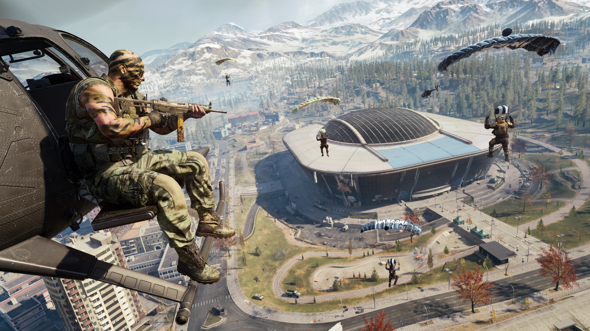

Poradnik do Warzone (taktyczna strzelanka)
1. Wybierz odpowiedni loadout
Broń główna i dodatki: Postaw na meta bronie – np. szybkie SMG do walki w zwarciu i precyzyjne AR lub LMG na dystans.
2.Perki:
Overkill – by mieć dwie mocne bronie.
Ghost – ukrywa cię przed UAV.
Fast Hands / Double Time – dla mobilności.
Używaj granatów: Smoke, stun, heartbeat sensor – mega pomocne w końcówkach.
- Ekwipunek: Każda runda zaczyna się z określoną ilością pieniędzy – kupujesz broń, pancerz, granaty.
- Graj zespołowo: Ustal z drużyną, gdzie iść (np. A/B site) i kto co kupuje.
- Używaj mikrofonu / czatu: Info o wrogach (np. "Dwóch na B site", "AWP na midzie") jest kluczowe.
.
3. Rozgrywka:
Krok 2: Zacznij dobrze – lądowanie i loot
- Ląduj z głową: Celuj w miejsca z dobrym lootem, ale nie przesadnie gorące (np. nie zawsze centrum miasta).
Zbieraj pieniądze: Szybki zakup loadoutu = przewaga.
- Kup stację: Loadout, pancerze, UAV i Self-Revive są kluczowe.
4. Graj z głową – pozycja i rotacja:
- Zajmij wysokości – dachy i wzniesienia dają przewagę.
- Zawsze patrz na strefę – rotuj wcześniej, nie czekaj do ostatnich sekund.
- Unikaj otwartego pola – zawsze szukaj osłony.
- Graj z headsetem – kroki i strzały dają info o wrogu.
- Używaj UAV i radaru – map awareness ratuje życie.
